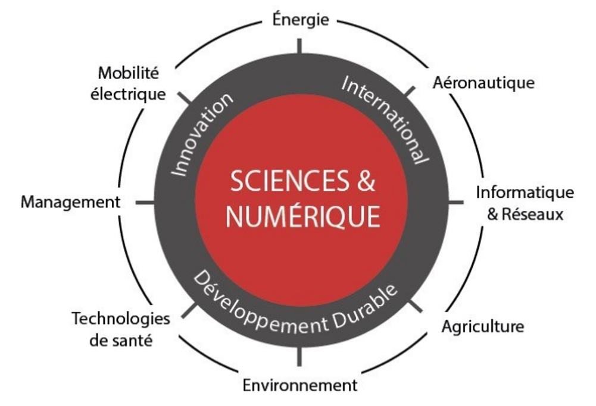

Parce que les technologies et l’IA sont partout, l’ISEN Ouest forme des ingénieurs aptes à répondre aux besoins des entreprises dans tous les secteurs d’activités.
Après le baccalauréat, vous optez pour un cycle de formation en 3 ans centré sur les sciences appliquées, le numérique et l’IA. En fonction de votre profil, sept cursus différents sont proposés. Pendant ces trois premières années, vous réfléchissez à votre projet professionnel et vous pouvez changer de cursus.
Ensuite, vous accédez sans critère de classement aux domaines professionnels proposés par l’ISEN Ouest. C’est le temps de la spécialisation.
La formation d’ingénieur généraliste ne se limite pas aux matières techniques ou scientifiques. Les élèves-ingénieurs apprennent à communiquer, à manager, à prendre de la hauteur sur leurs activités et surtout, comme personne ne connait les technologies de demain, ils apprennent à apprendre.
